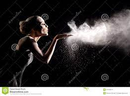

How to Make the stop motion blog on photography
Place your phone on a tripod and get your scene ready. Open the Camera app and turn on Live Photos by tapping the icon. Frame your first shot and tap the shutter button. Make incremental movements within your scene. Tap the shutter button again! This article contains affiliate links. This doesn’t cost you anything, but I can earn a small commission if you buy something or sign up on a website. This helps me to maintain the blog.
Materials you need
-hot glue gun - Glue. Lots of different types of glue are used in stop motion. Cyanoacrylates are the most common. - Hot glue gun. This is the main tool you need to work with recycled materials because it helps keep parts in place. - Adhesive tapes. - Pins. - Utility knife. - Modeling stick. - Plier
Steps to make the blog on stop motion photography
1- Place your phone on a tripod and get your scene ready
2- Open the Camera app and turn on Live Photos by tapping the icon
3- Frame your first shot and tap the shutter button
4- Make incremental movements within your scene
Tap the shutter button again.
Basic stop motion production process is as follows:
The scene is modeled in real life with props, objects, and materials. The characters are all created along with their different positions and facial expressions, and then set in the appropriate scene. The scene is lit and composed and then it’s ready to be photographed. The characters and scenes are then adjusted slightly, and another photograph is taken. This process is repeated, adjusting the characters and scenes every time until the desired animation and pacing is fully photographed. All of the photographs are then compiled together to create a 3D animation completely done with hand-made photography On the other hand, if it is for mathematics or physics, then I often write the main points that I need to know, although these generally cover the whole theory as well.
10 Steps to creating stop motion animation
Create a plan. ... Calculate the number of frames you'll need. ... Think about transitions. ... Find the right aspect ratio and backdrop. ... Create your props. ... Find or create even lighting. ... Set everything up. ... Shoot your scenes as still frames.
types of stop motion
Types of Stop Motion Types of Stop Motion While stop motion is a distinct animation style, there are different ways to utilize it as part of your marketing strategy. The sub-categories of stop motion including cutouts, clay (claymation) and puppets, and live-action – all of which could be utilized in an eye-catching marketing or corporate video to set your messaging apart.